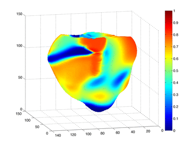
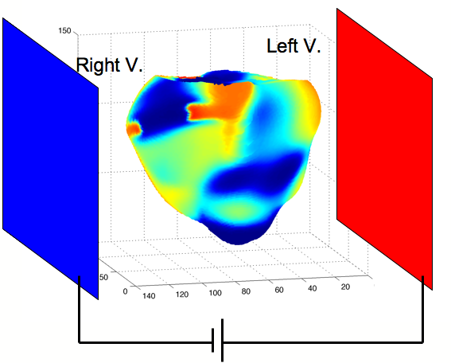

Although defibrillation, by the application of large current shocks, is realized daily around the world, there is no complete theoretical explanation for how defibrillations works. The magnitude of the electric field that reaches the heart must be around 5 Volt/cm for around 10 ms to ensure successful defibrillation. In this project, we are reproducing through numerical simulation the process of defibrillation. The objectives are twofold: first getting a better understanding of how the defibrillation is taking place in the heart ventricles and secondly to help in design better (less invasive) strategies for realizing at lower energy level successful defibrillation. Details of some numerical and mathematical treatments of defibrillation may be found in this reference by Keener and Lewis (J. Theor. Biol., 200, 1, 1999).
Here below is a movie (left) of three-dimensional simulation of the defibrillation and on the right the positioning of the electrodes.
The simulation is performed on a rabbit heart's ventricle and incorporates the detail of the fiber orientations.
|  |  |
For this project I am collaborating with the research group of Dr. Flavio Fenton at Cornel University (Ithaca, USA) and Dr. Elizabeth Cherry at Rochester University (USA).
This research receives the financial support from Spanish National Projects FIS-2005-06912-C0-02 (2006-2008) and FIS-2008-06335-C02-02 (2009-2011).